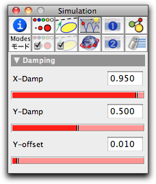

Floor

 |
| A ball under gravitational attraction meeting a floor |
A floor is very similar to a Bouncer, which behaves like a segment of a floor.
Inspecting a Floor
The floor inspector has three values that can be adjusted:
 |
| The floor inspector |
X-damp and Y-damp are damping factors that can attain values between 0.0 and 1.0. The two numbers dx = 1 – X-damp and dy = 1 – Y-damp are factors by which the x- and y-components of a mass-object’s velocity are multiplied whenever the mass-object hits the floor. Thus if both sliders are set to 0.0, the point will bounce off without any damping, while if both sliders are set to 1.0, the particle will stop moving as soon as it hits the floor.
Floors and CindyScript
Like other CindyLab object, a floor provides several fields that can be read and set by CindyScript. The following list shows the accessible fields for a floor:
| Name | Writeable | Type | Purpose |
xdamp | yes | real | handle to the X-damp factor |
ydamp | yes | real | handle to the Y-damp factor |
simulate | yes | bool | turn on/off simulation for the floor |
Page last modified on Saturday 03 of September, 2011 [10:32:00 UTC].
The original document is available at
http://doc.cinderella.de/tiki-index.php?page=Floor